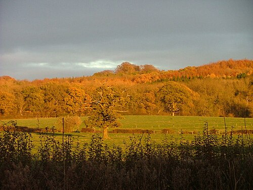
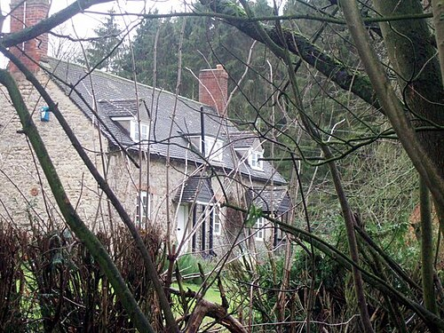
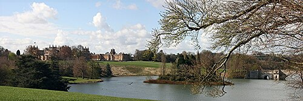
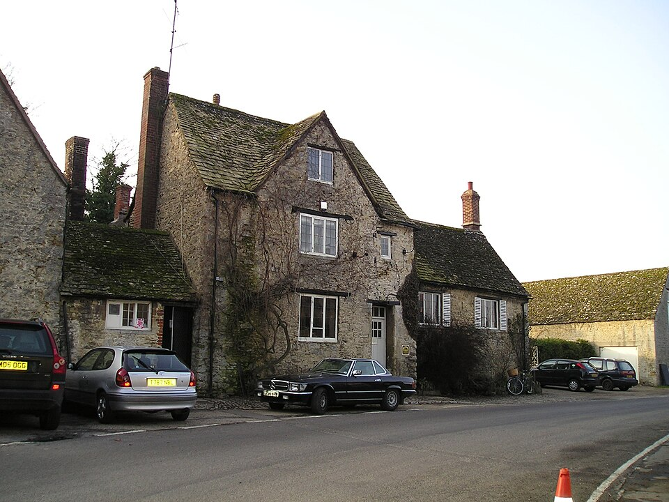
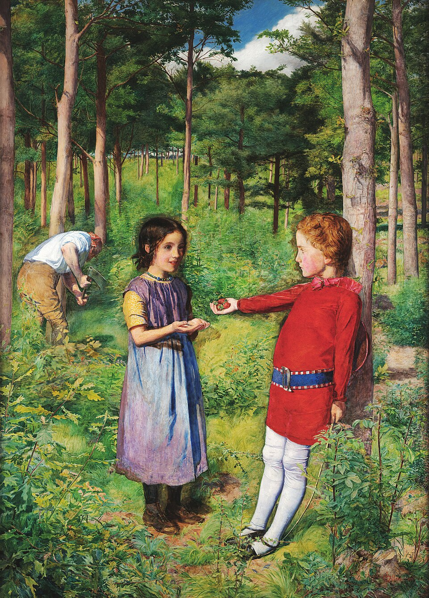

Роман · 1992
Дорога через лес
The Way Through the Woods — десятый роман об инспекторе Морсе. Русское название рабочее.
- Первое издание
- Macmillan, Лондон, 9 октября 1992
- Премия
- «Золотой кинжал», 1992 — второй у Декстера
- Расследуют
- главный инспектор Морс и сержант Льюис
- Место
- Уитемский лес к северо-западу от Оксфорда, Бленхеймский парк
- Экранизация
- «Инспектор Морс», 29 ноября 1995 — первый из пяти фильмов-спецвыпусков; режиссёр Джон Мэдден, сценарий Рассела Льюиса
Название
Название взято из стихотворения Редьярда Киплинга «Дорога через лес» (1910): дорогу через лес закрыли семьдесят лет назад, её размыли дожди и затянул подлесок, и теперь никто не скажет, что она там была. Только летним вечером в лесу будто слышны конский топот и шорох юбки — по дороге, которой нет.
Завязка
Год назад пропала красивая молодая шведка Карин Эрикссон. Теперь в полицию приходит анонимное стихотворение-загадка из пяти строф, и полиция просит помощи у читателей «Таймс». Дело открывают заново. Морс читает в загадке, что Карин убита и искать её надо было в Уитемском лесу. С главным лесничим Дэвидом Майклзом полиция прочёсывает лес и находит тело — но мужское.
В этом романе умирает от естественных причин старый друг Морса, патологоанатом Макс — Максимилиан де Брин.
Развязка — открыть, если роман прочитан
Тело в лесу — Майтон, человек со снимков. Преподаватель Алан Хардинг признаётся: Майтон фотографировал Карин в доме, где снимали порнофильмы, а когда остальные зашли проверить, оба были мертвы; Хардинг, Макбрайд, Дейли и Майклз сговорились спрятать тела. Морс понимает, что это ложь: Карин жива.
Карин — это Кэти, жена Майклза. Она убила Майтона, когда тот попытался её изнасиловать; Майклз укрыл её и уговорил остальных молчать. Потом Майклз убил Джорджа Дейли, а Кэти, переодевшись Дейли, отвезла тело в лес, чтобы обеспечить мужу алиби. Сын Дейли Филип, у которого было алиби, кончает с собой. А Льюис в конце узнаёт, что загадочный ключ полиции подкинул сам Морс.
Люди
| Имя | Кто это |
|---|---|
| Карин Эрикссон | Пропавшая шведка. |
| Дэвид Майклз | Главный лесничий Уитемского леса. |
| Кэти Майклз | Его жена. |
| Джордж Дейли | Нашёл сумку Карин; погибает в Бленхеймском парке. |
| Маргарет и Филип Дейли | Его жена и сын. |
| Алан Хардинг | Местный преподаватель. |
| Макбрайд | Съёмщик дома, исчезает до допроса. |
| Макс де Брин | Патологоанатом и друг Морса; умирает. |
Места
| Место | Что там происходит | |
|---|---|---|
| Уитемский лес | есть | Древний лес на холме за Темзой, северо-западнее Оксфорда. Здесь ищут Карин. |
| Бленхеймский парк | есть | Парк дворца у Вудстока; здесь находят Дейли. |
| «Белый олень», Уитем | есть | Деревенский паб; в сериале здесь ссорятся герои. |
| Оксфордская тюрьма | была | Тюрьма у замка на Нью-роуд, закрыта в 1996 году; в сериале — тюрьма Фарнли. |








Реалии
- Уитемский лес (Wytham Woods)
- С 1942 года принадлежит Оксфордскому университету и служит огромной лабораторией: здесь десятилетиями изучают птиц, барсуков и лесные сообщества. Лесничий здесь — фигура серьёзная.
- Письма в «Таймс»
- Колонка писем в редакцию «Таймс» — общенациональная трибуна образованной Англии. Загадку в стихах разгадывают читатели, и среди них, как выясняется, сам Морс.
- Бленхейм
- Дворец герцогов Мальборо у Вудстока с огромным парком Капабилити Брауна. Тот самый, что мелькал в первом романе.
Книга и сериал
После почти трёхлетнего перерыва «Инспектор Морс» вернулся 29 ноября 1995 года этим фильмом. Сценарий написал Рассел Льюис, позже автор всех серий «Индевора». В ролях: Джон Тоу, Кевин Уотли, Джеймс Граут (Стрейндж), Малкольм Стори (главный инспектор Мартин Джонсон), Мишель Фэрли (Карен Андерсон / Кэти Майклз), Нил Даджен (Дэвид Майклз), Кристофер Фэрбэнк (Джордж Дейли). Здесь впервые появляется патологоанатом доктор Лора Хобсон — Клэр Холман, которая потом перейдёт в «Льюиса».
- Шведка Карин стала англичанкой Карен Андерсон с тяжёлым прошлым.
- Появился конфликт Морса с главным инспектором Джонсоном, который вёл дело первым и повесил его на серийного убийцу.
- Самоубийства Филипа Дейли нет; финал жёстче — Кэти погибает от выстрела из собственного пистолета.
- Морс собирается в отпуск в Байройт, на вагнеровский фестиваль, и всё время не может уехать. Выясняется, что Стрейндж служил на подводной лодке.
- Снимали в Уитемском лесу, в саду членов колледжа Эксетер, на Тёрл-стрит, в старой Оксфордской тюрьме и у Бленхеймского дворца. Звучат Струнный квартет соль минор Дебюсси и его прелюдия «Шаги на снегу».
- На открытке у Карен — «Дочь лесника» Милле.
